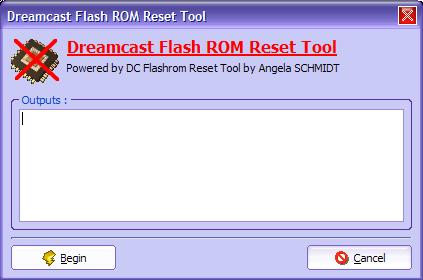

| 12. Effacer la ROM FLASH de la Dreamcast |
Ce chapitre explique le pourquoi du comment de la ROM FLASH, et pourquoi l'effacer.
1) Introduction
La ROM FLASH de la Dreamcast est une zone mémoire utile au BIOS qui contient diverses informations, comme par exemple la date, l'heure, la langue, la région de la Dreamcast (Euro, Usa), les paramètres DreamKey...
Cette partie de mémoire peut-être copié avec DC-TOOL GUI, pour cela lancez une copie de votre BIOS. Elle sera dans le fichier dc_flash.bin.
A quoi sa sert de l'effacer? Bah, à vrai dire, à rien. Mais comme la Dreamcast ne propose pas cette option, je pensais utile de l'implementer, car dans DreamKey v1.0 on avais accès à cette option.
Si vous effacez la ROM, vous aurez une Dreamcast comme sortie d'usine. Cela n'affecte pas les VMU, et de plus, rien d'autre.
2) Utilisation
Pour effacer la ROM FLASH de votre Dreamcast, rendez vous dans le menu Fichier > Effacer la FLASH... . Pour lancer l'effacement de la ROM flash, assurez vous d'avoir DC-LOAD lancé (comme d'habitude...).

Cliquez sur Commencer. Après quelques secondes et avoir passé differentes boîte de dialogue, vous verrez sur votre Dreamcast la bordure devenir rouge, puis verte.
Lorsqu'elle est rouge, la mémoire est en train d'être effacé. Une fois verte, la mémoire est effacé. Eteignez votre Dreamcast. Rallumez la : Si au démarrage on vous demande l'heure, vous avez réussi.
Votre Dreamcast est comme sortie d'usine !